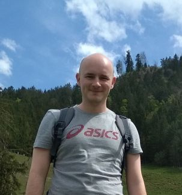

About Me
Let me tell you a few things...

Coats Odorhei SRL
Janssen Vaccines AG
Prodplascom SRL
Hargaz Harghita Gaz SA
BIO
I have 7.5 years experience in SAP Master Data Management. Due to my passion and interest for
tech I'm intensively learning Web Development.
I have a BSc in Computer Engineering from
the "Petru Maior" University in Tg. Mures. I have also completed Colt Steele's Web Developer
Bootcamp on Udemy.com.
Coats Odorhei SRL
(Odorheiu Secuiesc, Romania)
Master Data Administrator
08.2009 - 11.2011
Ensure the correct and consistent maintenance of master data in the Supply Chain area.
Janssen Vaccines AG
(Bern, Switzerland)
Master Data Administrator
01.2012 - 07.2016, 12.2017-04.2018
Responsible for the administration of global master data objects.
Prodplascom SRL
(Bradesti, Romania)
Administrator
01.2017 - Present
Family business in HR consultancy.
Hargaz Harghita Gaz SA
(Odorheiu Secuiesc, Romania)
Data Protection Officer
08.2018 - 01.2019
Responsible for aligning the company with the GDPR.